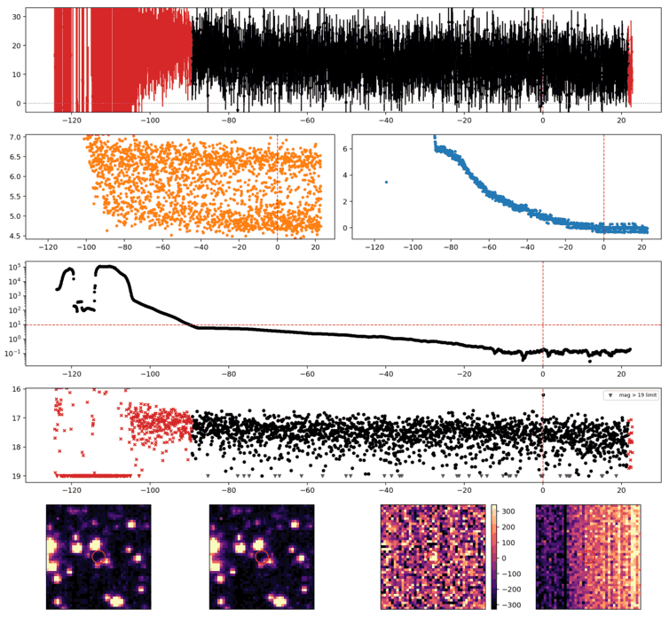
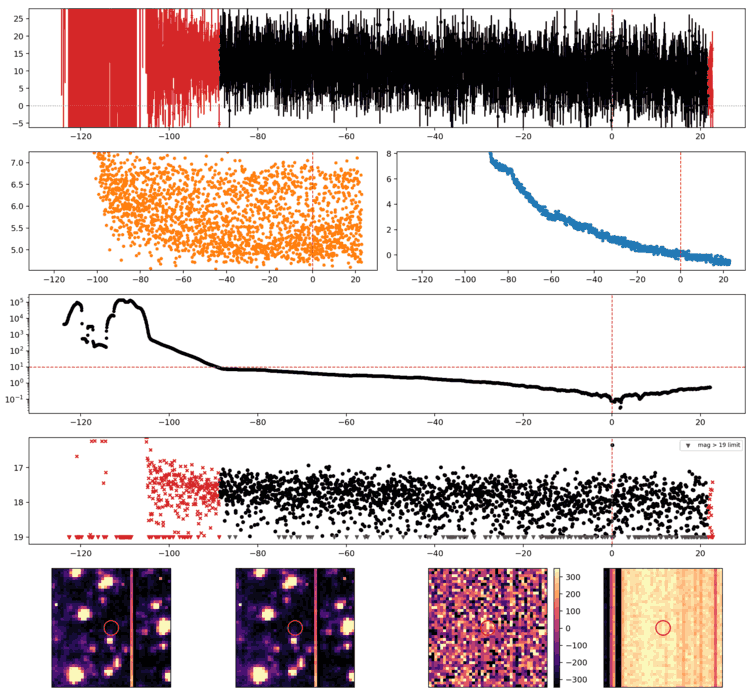
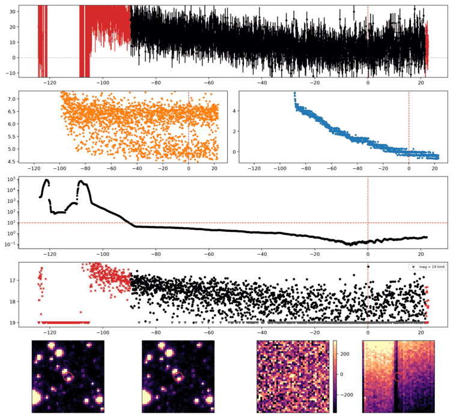
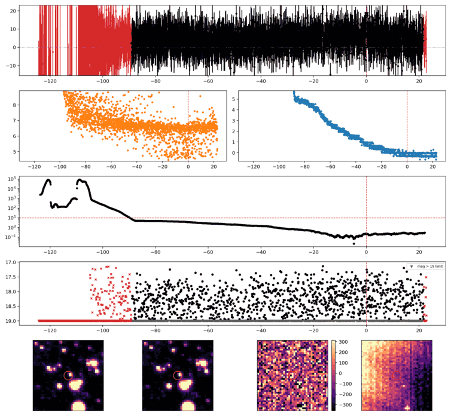
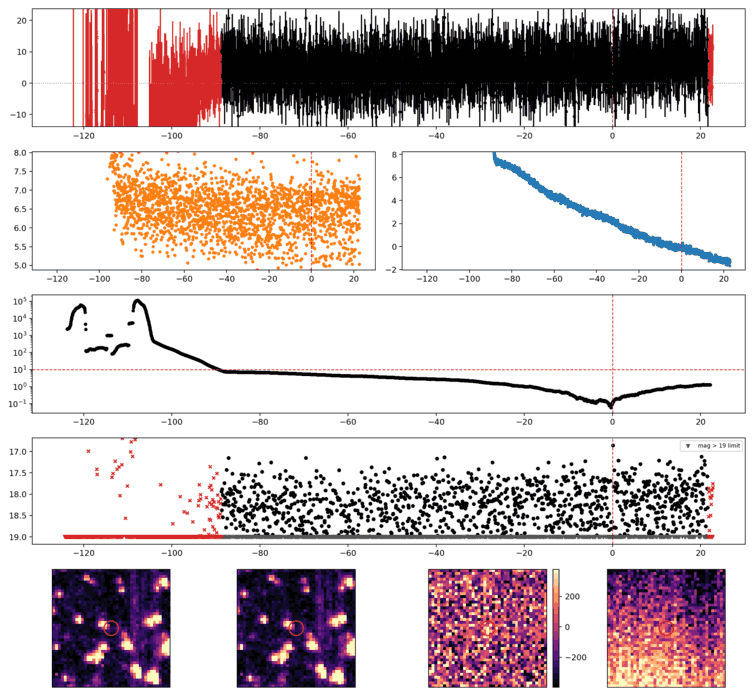
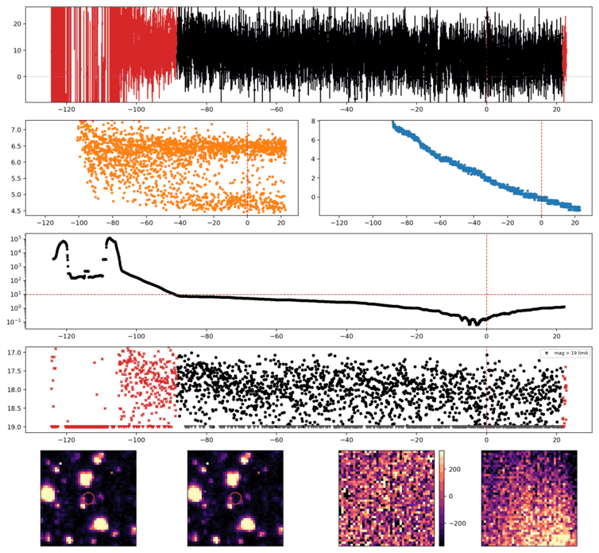

Search centered on refined position (24.4723897, -53.3928602 deg). Gaia coordinates are at J2016.0; proper motions are shown, without epoch propagation. A positional match does not change the candidate flags.
No Gaia DR3 sources found within 5 arcseconds.
Retrieved 2026-10-19T09:32:23.037850+00:00

Search centered on refined position (20.9762242, -45.8831104 deg). Gaia coordinates are at J2016.0; proper motions are shown, without epoch propagation. A positional match does not change the candidate flags.
No Gaia DR3 sources found within 5 arcseconds.
Retrieved 2026-10-19T09:32:24.014231+00:00

Search centered on refined position (359.1732811, -51.2068658 deg). Gaia coordinates are at J2016.0; proper motions are shown, without epoch propagation. A positional match does not change the candidate flags.
No Gaia DR3 sources found within 5 arcseconds.
Retrieved 2026-10-19T09:32:25.080663+00:00

Search centered on refined position (8.9967954, -55.0594944 deg). Gaia coordinates are at J2016.0; proper motions are shown, without epoch propagation. A positional match does not change the candidate flags.
No Gaia DR3 sources found within 5 arcseconds.
Retrieved 2026-10-19T09:32:26.232633+00:00

Search centered on refined position (0.2896506, -38.1665521 deg). Gaia coordinates are at J2016.0; proper motions are shown, without epoch propagation. A positional match does not change the candidate flags.
No Gaia DR3 sources found within 5 arcseconds.
Retrieved 2026-10-19T09:32:27.609187+00:00

Search centered on refined position (4.2234531, -40.3900632 deg). Gaia coordinates are at J2016.0; proper motions are shown, without epoch propagation. A positional match does not change the candidate flags.
No Gaia DR3 sources found within 5 arcseconds.
Retrieved 2026-10-19T09:32:28.714500+00:00